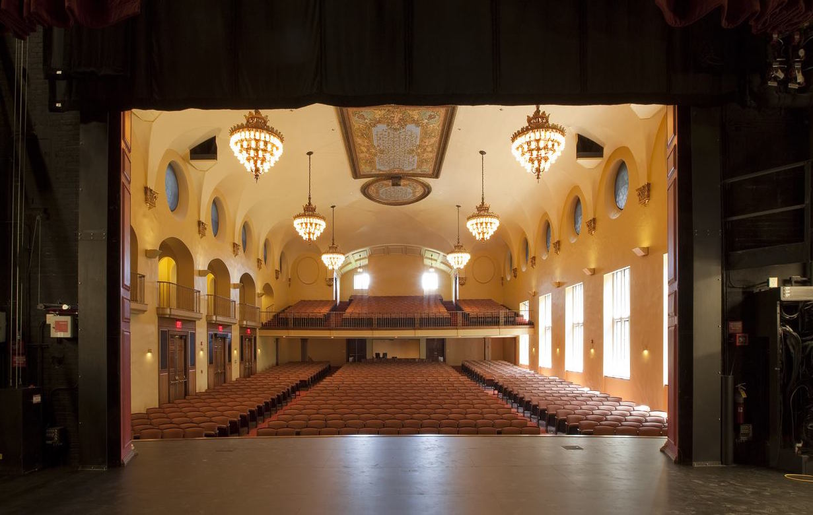

Travel Info
Traveling from off campus? Don't worry - we've got you! If you need additional help, don't hesitate to shoot us an email at logistics@wellesleyhacks.org.
Diana Chapman Walsh Alumnae Hall
Lulu Chow Wang Campus Center

DRIVING 🚗
You can park for free in the Davis Parking Facility (right across from the hackathon space). If you need reimbursement for travel, send us an email. We're happy to work with you to figure out if we can cover your gas! We can offer more reimbursement if you're bringing other hackers to WHACK. You can use the Slack channel to coordinate with other hackers near your school/area.

BOSTON AREA STUDENTS
We will be providing Lyft credits for groups of 4 to use together coming to and from Wellesley. You'll be matched with three other students near your campus, and you will figure out amongst yourselves where to meet up and when to leave. You will receive your group and Lyft code a few days before WHACK.
BUSES 🚌
You do not have to attend the school listed in order to take the bus from that stop - please take whichever bus would be most convenient for you. After WHACK, buses will depart from Wellesley College no later than 4:30pm.
BUS ROUTE FOR OTHER SCHOOLS 🚌
📆 Date: November 10 (Friday)
📍 Route 1: Massachusetts bus
1:30pm-1:50pm: UMass Amherst (1 Campus Center Way, Amherst, MA 01003-9243)
2:10pm-2:30pm: Smith College (100 Elm St, Northampton, MA 01063)
3:00pm-3:20pm: Mount Holyoke College (Blanchard Campus Center, South Hadley, MA 01075)
5:00pm: arrival at Wellesley College
📍 Route 2: Pennsylvania bus
9:00am - 9:20am: Bryn Mawr College (816 New Gulph Rd, Bryn Mawr, PA 19010)
10:00am - 10:20am: University of Pennsylvania (220 S 33rd St, Philadelphia, PA 19104)
1:00pm-1:30pm: food stop
5:00pm arrival at Wellesley College
📍 Route 3: New York bus
11:00am-11:20am: New York University (70 Washington Square S, New York, NY 10012)
12:00pm-12.20pm: Barnard College/Columbia University (3009 Broadway, New York, NY 10027)
1:00pm-1.20pm: Fordham University (McGinley Center, Bronx, NY 10458)
5:20pm: arrival at Wellesley College